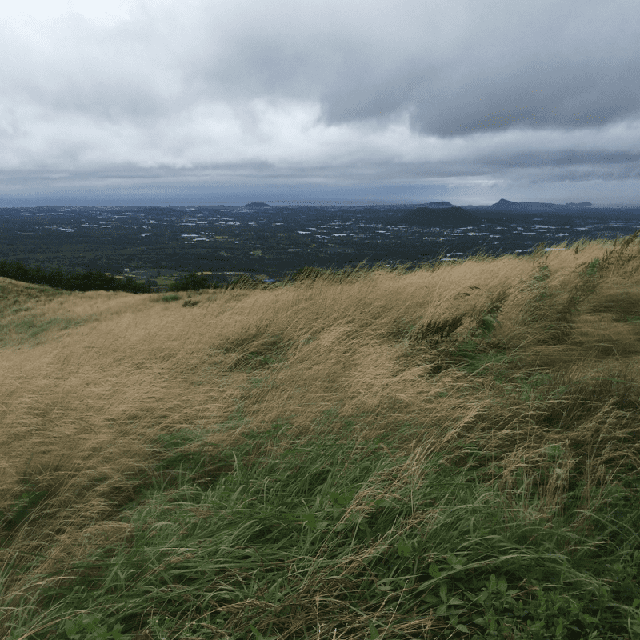

메인 콘텐츠
TEA FROM JEJU
대한민국이 가진 천혜의 자연 유산 제주,
화산섬 제주가 가진 경이로운 생명력으로
오설록의 차는 탄생합니다.
제주 차밭 환경
-
한라산이 빚은 안개
연평균 기온 16도씨 제주 차밭은 화산섬이 만든 완만한 지형의 고저로 인해 식물 에너지의 근원인 태양을 한껏 끌어안습니다. 사계절 내내 쏟아지는 따뜻한 빛은 연 평균 기온을 14~16℃로 유지해 차가 건강하게 자랄 수 있는 온도를 제공합니다.
안개
제주 차밭은 화산섬이 만든 완만한 지형의 고저로 인해 식물 에너지의 근원인 태양을 한껏 끌어안습니다. 사계절 내내 쏟아지는 따뜻한 빛은 연 평균 기온을 14~16℃로 유지해 차가 건강하게 자랄 수 있는 온도를 제공합니다.
안개
-
생명을 품은 화산섬의 흙
최대 공극률 75% 제주의 흙은 전 세계적으로도 손꼽히는 공극률로 물과 공기의 흐름을 원활하게 하고 일반 토양보다 10배나 높은 유기물을 함유하고 있습니다. 다공성 제주 현무암의 미세한 틈은 차나무를 건강하게 유지하여 제주차만의 차이를 만들어 냅니다.
흙
제주의 흙은 전 세계적으로도 손꼽히는 공극률로 물과 공기의 흐름을 원활하게 하고 일반 토양보다 10배나 높은 유기물을 함유하고 있습니다. 다공성 제주 현무암의 미세한 틈은 차나무를 건강하게 유지하여 제주차만의 차이를 만들어 냅니다.
흙
-
청정 화산 암반수
1,800mm 빗물의 천연필터 제주의 화산 암반수는 맑은 물을 넘어 ‘좋은 물’의 대명사입니다. 천연 필터 역할을 하는 화산 토양은 제주의 암반수를 더욱 깨끗하게 만들어 차 나무에 신선하게 공급됩니다.
암반수
제주의 화산 암반수는 맑은 물을 넘어 ‘좋은 물’의 대명사입니다. 천연 필터 역할을 하는 화산 토양은 제주의 암반수를 더욱 깨끗하게 만들어 차 나무에 신선하게 공급됩니다.
암반수
-
제주의 거친 바람
연평균 초속 4~7m  거친 제주의 바람이지만 실은 차 재배에는 더 없이 소중한 제주의 바람입니다. 남쪽의 먼 바다에서 연평균 초속 4~7m의 거센 바람이 불어와 뿌리의 수분 흡수를 증가시켜 차의 향기를 짙게 만들고, 찻잎의 불순물을 씻어내는 에어워셔의 효과로 제주 차만의 특별함을 더합니다. 바람 -
아열대 기후의 화산섬
연평균 기온 16도씨 제주 차밭은 화산섬이 만든 완만한 지형의 고저로 인해 식물 에너지의 근원인 태양을 한껏 끌어안습니다. 사계절 내내 쏟아지는 따뜻한 빛은 연 평균 기온을 14~16℃로 유지해 차가 건강하게 자랄 수 있는 온도를 제공합니다.
화산섬
제주 차밭은 화산섬이 만든 완만한 지형의 고저로 인해 식물 에너지의 근원인 태양을 한껏 끌어안습니다. 사계절 내내 쏟아지는 따뜻한 빛은 연 평균 기온을 14~16℃로 유지해 차가 건강하게 자랄 수 있는 온도를 제공합니다.
화산섬
오설록의 제주 차밭
약 100만 평에 달하는 3개의 오설록 유기농 차밭은 화산섬의 지역적 기후 환경에 따라 각각의 색과 향, 그리고 맛이 특별한 차를 생산하고 있습니다.
유기농/품질관리 인증 정보색이 좋은 서광 차밭
산방산 근처의 서광 차밭은 대기가 한라산을 지나며 많은 구름과 안개를 형성하고, 이는 자연 차광 효과를 내 찻잎의 색을 좋게 만듭니다. 온화한 기후와 자연 차광 효과는 고급 품질의 차를 만들 때 더없이 좋은 생육 조건이 됩니다.
주요 생산 제품- 안개
- 흙
향이 좋은 돌송이 차밭
돌송이 차밭 지역은 예로부터 화산재가 굳어서 돌멩이같이 잘게 부서진 화산송이가 많아 ‘돌송이’라고 불리어 왔습니다. 이곳은 산과 바다를 동시에 접하고 있어 매년 4월 한라산의 잔설을 품은 산바람과 바다의 수분을 머금은 바닷바람이 밤낮으로 불어와 돌송이 차밭에서 채엽한 차는 향이 매우 좋습니다.
주요 생산 제품- 빛
- 물
- 바람
맛이 좋은 한남 차밭
과거 ‘해들이밭’이라 하여 마을에서 가장 먼저 해가 드는 곳이라 불렸던 한남 차밭은 온화한 기후에서 성장해 차나무가 어리고 아미노산 함량이 높아 뛰어난 맛을 선사합니다.
주요 생산 제품- 흙
- 물
- 바람
오설록의 차가 특별한 이유
1979년, 돌과 바람이 전부였던 제주의 땅에서 시작해 최고의 차를 생산하기까지,
오설록의 차가 특별한 이유를 만나보세요.

주 오설록의 유기농 차밭은 연간 11,176톤의 이산화탄소를 흡수합니다. 이는 과수작물 대비 3배 이상의 탄소 축적 효과가 있습니다. 차 나무는 인류에게 건강한 차를 제공하며 동시에 지구의 건강한 환경에도 기여하고 있습니다.
오설록은 믿을 수 있는 품질의 차를 생산하기 위해 직접 차 나무를 재배하고 찻잎을 가공하여 차 제품을 고객에게 전달하기까지 전 과정을 통합적으로 관리하고 있습니다.
제주의 겨울 바닷바람을 이기고 핀 제주 동백꽃, 제주의 돌담길을 걸을 때 풍겨오는 제주 귤꽃, 하얗게 수놓은 제주 자생종인 왕벚꽃, 일 년에 단 열흘만 꽃을 피우는 제주 한란 등 제주에 서식하는 꽃을 '헤드스페이스' 기법을 통해 원물의 훼손없이 꽃향을 포집하여 제주의 향기 그대로 차에 담았습니다.
오설록의 블렌디드는 제주의 꽃과 과일을 담고 있습니다. 제주의 땅에서 난 것들로 차를 만들며 제주의 자연과 상생하고 있습니다.
제주의 봄볕 아래 약발효한 섬세한 꽃향미, 따뜻한 제주 바람으로 발효한 건과일의 깊은 풍미 등 제주의 기후로 만들어진 특별한 발효를 통해 오설록의 발효 명차는 만들어집니다.
한국 전통 장류에서 유래한 고초균으로 찻잎 발효 후, 제주 삼나무와 함께 숙성하여 착향된 그윽한 삼나무 향미는 제주에서만 발효되는 깊이 있는 차맛을 경험할 수 있습니다.
오설록은 국내 단일 최대 규모의 연구소를 설립하여 끊임없는 차에 대한 연구로차 품질 뿐 아니라 미래 차 산업의 발전을위하여 품종 연구 및 육종, 유기 재배 기술 등을 연구하고 있습니다.
곡우 전 약 2주간, 오설록의 제주 차밭에서는 차나무의 빛을 차단하여 찻잎이 더욱청명한 녹색을 띄게 됩니다. 이를 통해찻잎의 쓴맛은 덜하고 감미가 높아지는데, 이렇게 수확한 찻잎은 오설록만의 특별한 가루차 전용 설비를 통해 높은 품질의말차가 생산됩니다.
Since 1979
차밭을 개간한 집념을 근간으로 차를 재배하고, 가공 발효하여 세계적으로 권위있는 명차 대회에서
꾸준히 수상을 이어가며 증명된 오설록의 차는 이제 전 세계의 사람들과 만나고 있습니다.
-
 1979
1979
우리의 전통 차문화 정립을 위한 차 사업의 시작 제주 돌송이차밭 부지 돌밭 개간 착공
-
 1983
1983
국내 최초 차 전문 매거진 태평양 [설록차] 창간
-
 1993
1993
고급 잎녹차를 우려낸 한국 최초 캔녹차 출시
-
 2001
2001
제주 오설록 티뮤지엄 개관
-
 2009
2009
일로향, 북아메리카 티 챔피언십’ 덖음차부문 1위 세작, 일본 시즈오카 세계녹차콘테스트 금상
-
 2015
2015
북아메리카 티 챔피언십 덖음차부문 1,2,3위 석권
2,500여개의 차 중에서 세작이 1위에 이어 우전과 일로향이 2,3위 모두 석권 -
 2016
2016
세계 녹차 협회 WORLD TEA CONTEST 금상 [삼다연 삼 병차]
-
 2020
2020
세계 녹차 협회 WORLD TEA CONTEST 금상 [일로향]
-
 2020
2020
독일 IF디자인어워드 패키지 부문 수상(순수차)
사람, 차를 만나다
억척스런 제주 사람의 손조차 한 번도 닿지 않은 채 버려진 세 곳의 땅을
제주의 자연을 이해하고 극복하며 한국의 차 문화를 잇기 위해 개간된 제주의 땅은
45년이 지난 지금 세계적인 차 산지로 손꼽히는 최고의 차 재배지로 거듭났습니다.
-
손으로 찻잎을 채엽하는 모습
-
차나무를 정성스럽게 살펴보는 고 장원 서성환 회장
-

돌송이차밭 계획 부지에서 고 장원 서성환 회장과 일행
-
서광 차밭 차묘목 식재 작업
다다일상,
차와 함께하는 삶
차를 마시는 것은 일상의 쉼을 가지며,
나를 이끌어내고 세상을 따뜻하게
바라보는 것에 관한 일입니다.
당신이 언제 어디에 있든 차와 함께
삶의 아름다운 여백을 만들어 나가길 바랍니다.
차 한 잔은 차분하게 하루를 정리하고 내일로 한 걸음 더 나아가게 만드는 기분이 들어요. 하루를 마무리하는 온점 같은 시간이라고 할까.
가구 브랜드 대표 양윤선

운동을 매일 하는 것도 중요하지만 가장 신경 쓰는 부분은 수분 보충이에요. 운동 전에 물을 마시고 운동을 마치면 따뜻한 차를 마셔요.
러닝 트레이너 임소영후각이 예민하다 보니 차를 마실 때도 향을 가장 신경 써요. 좋은 향을 내는 차가 심신에 안정을 줘서 더 즐기게 됐어요.
채식 요리 연구가 신주하